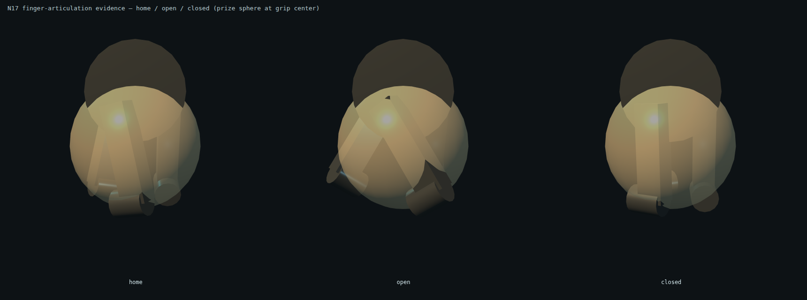
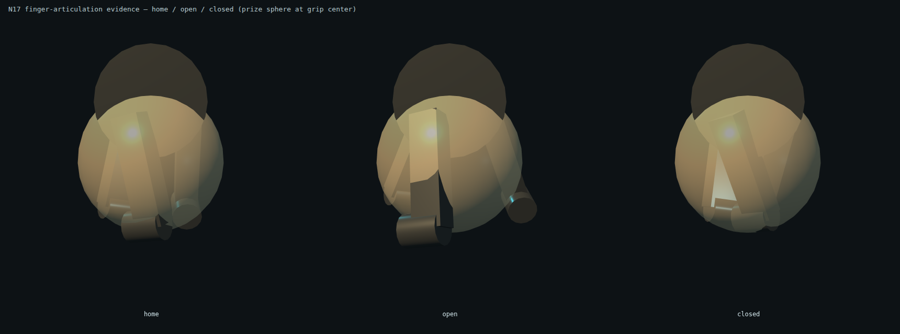

Each row shows home / open / closed for the same real rig + StaticScene finger meshes, with the translucent prize sphere at the grip center. Before: blades sweep tangentially (twisted, no enclosure). After: blades swing radially — open flares symmetrically outward, closed converges around the prize.

